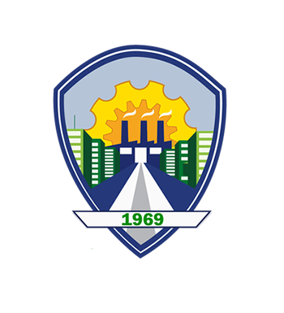

La ciudad de Soyapango, es un municipio de El Salvador, ubicado al centro del departamento y Área Metropolitana de San Salvador, la capital del país. Es la segunda ciudad más poblada de esta área metropolitana y la tercera de la nación. Es conocida comúnmente como la "Ciudad Industrial". Está limitado por los siguientes municipios: al norte, por Delgado y Tonacatepeque; el este, por Ilopango; al sur, por Santo Tomás y San Marcos; y al oeste, por San Salvador y Delgado. Se encuentra ubicado entre las coordenadas geográficas siguientes: 13° 44' 50" LN (extremo septentrional)y 13° 39' 58"LN (extremo meridional); 89° 06' 57" LWG (extremo oriental) y 89° 10' 16" LWG (extremo occidental).
En soyapango su población tiene diferentes opciones para poder ganarse el pan de cada día, entre las multiples maneras en que podemos encotrar trabajando a la gente de soyapango es en su mayor parte el comercio, ya sea en algún almacén o de manera informal con puestos de venta en sus calles pintorezcas, incluso sin necesidad de un puesto o almacén físico ya que muchas de las personas se dedican a hacer comercio por internter ayudandose de las tecnologías como las redes sociales.
Fundación de la ciudad El 20 de noviembre de 1542 en España fueron promulgadas las Ordenanzas de Barcelona o Nuevas Leyes. Tales ordenanzas constaban de cuarenta Artículos de Ley. En su artículo undécimo fue creada la Real Audiencia de los Confines Entre Tierra Firme (Nicaragua y Guatemala). Este importante organismo, representativo del real dominio, estaría regido por cuatro oidores letrados, fungiendo uno de ellos como presidente. Para este cargo fue designado en esa ocasión el licenciado Alonso de Maldonado, quedando como oidores los licenciados Diego de Herrera, Pedro Ramírez de Quiñónez y Juan Rogel.El 15 de enero de 1543, ya establecida la Real Audiencia de los Confines en la ciudad de Gracias a Dios, Honduras, acordó conferir la categoría y título de Pueblo a 182 localidades, incluyendo Soyapango.
Los ríos que cruzan el territorio de Soyapango son, El Acelhuate, El Cañas, Tapachula, Chantecuán, El Sumpa, El Sauce y el Chagüite. Además de los ríos mencionados existen dos quebradas que son: El Arenal y El Aposento y otras de menor impacto. Debido al crecimiento poblacional, comercial e industrial estas fuentes presentan un alto índice de contaminación por residuos industriales, desechos y aguas residuales que se vierten en estos. El abastecimiento de agua potable lo suministra ANDA. La ciudad cuenta con nueve tanques de captación, sin embargo la gran mayoría de repartos y colonias de la zona carecen del vital líquido. Esta situación es crítica ya que con el crecimiento poblacional que ha tenido Soyapango se ha mutilado zonas de recarga acuática y los mantos acuíferos disminuyen aceleradamente cada año Hidrografía